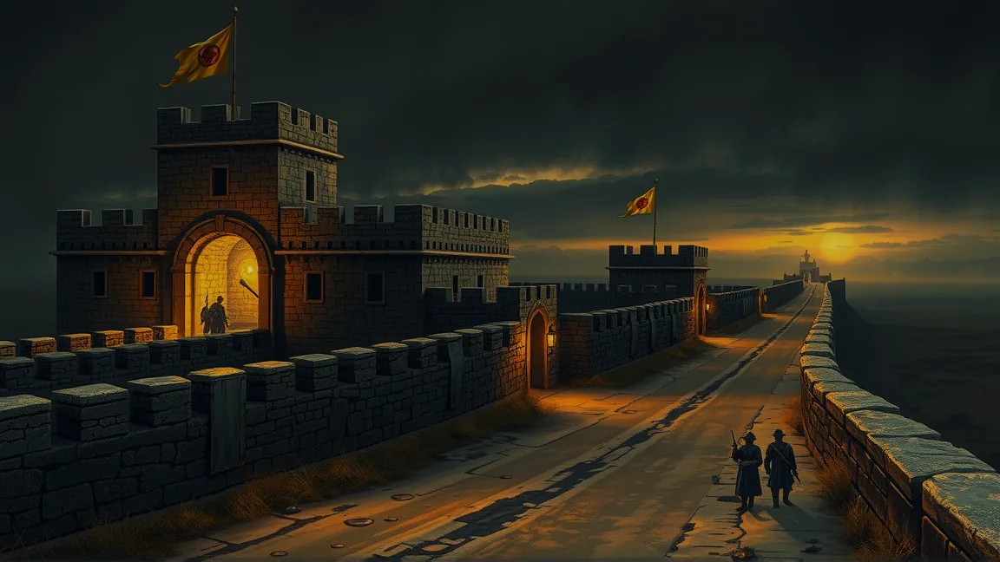

Strzegwacht · twierdza graniczna
Utrzymanie: żołd, myto z traktu, zaopatrzenie garnizonu · Garnizon: setka regularnego wojska, mury kamienne, wieża obserwacyjna · Cechy szczególne: strzeże traktu od dwustu lat przed wschodnimi barbarzyńcami
Kamienna twierdza wbita w pogranicze niczym ostrzegawczy palec. Z wieży strażackiej widać równinę na pięć mil w każdą stronę — i to dobrze, bo z tamtej strony nie przychodzi nic dobrego. W koszarach pachnie potem, smarem do broni i palącymi się świecami; w kantynie żołnierskiej piwo jest proste, jedzenie sycące, a plotki świeże. Felczer Ryszard w lazarecie leczy rany metodami nieco brutalniejszymi niż klasztorne, ale skutecznymi.
Komendant Groźna szuka wiarygodnych ludzi do rozpoznania aktywności za granicą — robót, których regularne wojsko nie może albo nie chce wykonać. Kuźnik Władysław naostrzy i naprawi oręż wojskowy, choć o fanaberie nie pyta, a faktor gildii kupieckiej Bruno Miech trzyma w twierdzy kantor — bo tam, gdzie stoi wojsko, zawsze są pieniądze do policzenia.
Twierdza stoi tu od dwóch stuleci, postawiona wtedy, gdy Korona jeszcze wierzyła, że granicę da się zamknąć murem. Dziś garnizon jest mniejszy niż dwadzieścia lat temu, a rozkazy przychodzą z Vilnogradu, gdzie nikt Kresów nie widział na oczy.

- Komendant Groźna potrzebuje kogoś dyskretnego do zwiadu za granicą — żołnierza posłać nie może, bo to byłaby już wojna.
- Strażnicy szepczą, że na wschodnim odcinku traktu od trzech nocy nie wraca żaden patrol — i nikt nie chce iść czwarty.
- W lochach twierdzy siedzi jeniec, który twierdzi, że barbarzyńcy nie napierają — uciekają przed czymś z głębi stepu.
- W kantynie idzie zakład, ile lat jeszcze Korona będzie płacić za mury na końcu świata. Nikt nie stawia na „długo".